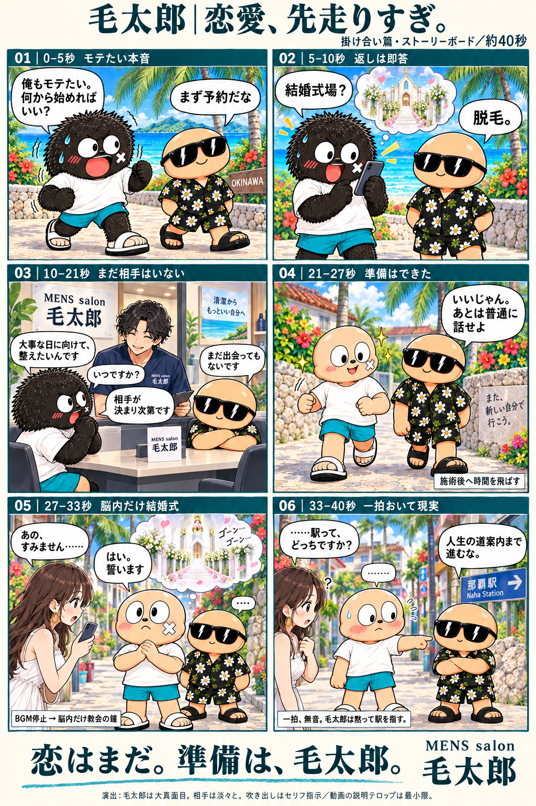

どん兵衛「耳は正直」
2024年掲載／約45秒（複数篇を収録）｜5年以内の公開・放映
平静を装う→耳に本音が出る→相手に気づかれる
参考動画の使える箇所：クールな態度と耳の反応のズレで、気持ちが伝わる。
毛太郎への提案
前半の決めポーズは真剣な顔のまま。毛だけが一拍遅れて広がり、本人とのギャップを作る。
歌詞字幕・商品訴求の文字あり。文字量ではなく、身体で本音を見せる演出を参考にする。
鈴木さんへ：固定の二人のキャラクターを使い、「モテたい」が先走る会話で笑わせる新構成です。
最新の提案は約40秒の会話劇。「結婚式場？」「脱毛。」で始め、最後は「はい。誓います」→道を聞かれただけ、で落とします。キャラクターとモテたい動機は維持します。
制作側の検討資料・未承認の提案です。お客様の発言、実動画で確認したこと、改善仮説を区別しています。添付された会話画像そのものは掲載していません。
提案の芯：毛太郎は「モテたい」一心で、予約を結婚式場と勘違いし、声をかけられただけで結婚の誓いまで進む。サングラス・花柄の相手役は、ずっと冷静に現実へ戻します。
最新の制作案です。クライアント承認済みの意味ではありません。以前のポーズ・毛の動き中心の45秒案に代わり、この掛け合い案を本ページの提案としています。

| 目安 | 会話・画 | 演出の狙い |
|---|---|---|
| 01｜0〜5秒 モテたい本音 | 毛太郎「俺もモテたい。何から始めればいい？」 相手「まず予約だな」 | 冒頭から欲望と二人の関係を見せる。端に店名・メンズ脱毛の小さな表示。 |
| 02｜5〜10秒 最初の勘違い | 毛太郎、スマホを出して「結婚式場？」 相手「脱毛。」 | 相手は即答。大声で笑いを説明せず、返答の短さで落とす。 |
| 03｜10〜21秒 サロンでも先走る | 毛太郎「大事な日に向けて、整えたいんです」 スタッフ「いつですか？」 毛太郎「相手が決まり次第です」 相手「まだ出会ってもないです」 | 店内でも同じ性格を貫き、広告部分で笑いを止めない。店名を背景に見せる。 |
| 04｜21〜27秒 準備はできた | 施術後へ時間を飛ばす。 相手「いいじゃん。あとは普通に話せよ」 毛太郎は大真面目にうなずく。 | 白T・水色短パン・頬の印は維持。相手役の花柄・サングラスも固定。 |
| 05｜27〜33秒 チャンス到来？ | 女性「あの、すみません……」 毛太郎「はい。誓います」 | BGMを止め、脳内だけ教会の鐘。現実の場所は街のまま。本人は本気。 |
| 06｜33〜40秒 現実に戻す→店名 | 女性「……駅って、どっちですか？」 一拍。相手「人生の道案内まで進むな。」 毛太郎は黙って駅を指す。 | 気まずい無音を残す。続いて「恋はまだ。準備は、毛太郎。」と店名・予約先。 |
約40秒は仮尺です。セリフの読み合わせで調整し、最後の店名・予約先を読む時間も確保します。施術後の姿はキャラクター演出で、1回の施術結果やモテる効果を保証する表現にはしません。
森永×マリマリマリーの会話のズレを参考に、毛太郎だけが結婚まで先回りするルールを繰り返す。
エニタイム×マリマリマリーを参考に、毛太郎の熱量に対して、相手は低い温度で短く返す。
「式場」「相手が決まり次第」で恋愛の先走りを積み重ね、「誓います」で最大化。駅の質問で現実に戻す。
参考にするのは会話の構造・温度差です。上記のセリフやストーリーが参考動画内にあるという意味ではありません。
毛太郎の別案を、既存の二人のキャラクターによる掛け合いでまとめました。「モテたい」という動機は残し、毛太郎だけが恋愛の段階を先走る構成です。「まず予約」→「結婚式場？」→「脱毛。」で入り、最後は女性に声をかけられて「はい。誓います」と返したら、駅を聞かれただけ、というオチにしています。参考のマリマリマリー系の会話のズレと温度差を取り入れ、本編の説明テロップは抑える想定です。この方向で、二人の演技と間を作り込む案はいかがでしょうか。
①二人の掛け合いの面白さ ②「誓います」のオチ ③説明字幕を抑える方向。まず声付きの簡易コンテでテンポを確認し、その後に本制作の尺を確定します。
伝えた方向性にはなっている。キャラクター・ビーチ・変化の物語を、全面的に否定されたわけではない。
面白い参考動画は、お客様も探している段階。「笑い」か「行ってみたい気持ち」か、両方かを具体案で合わせる。
本編の文字は入れない方がよい。最後を参考のようにし、冒頭や画面端でも毛太郎と分かるようにしたい。
「文字なし」をロゴまで消す意味には取らない。一方、ロゴを足すだけで面白さが改善するわけでもないため、ブランド表示の修正と、ギャグ・テンポの修正を別々に提案する。
区分は既存のシーン一覧と実動画の場面確認による目安。表示幅は読みやすさを優先。S01〜07＝0〜28秒／S08〜12＝28〜48秒／S13〜15＝48〜約62秒／S16＝約62〜66秒。
| 確認した箇所 | 改善仮説 | 具体的な直し方 |
|---|---|---|
| S01〜07 多くが約4秒ずつ | 真似する→さらに真似する→気づく、の進みが均等。「予想外の一瞬」が弱くなりやすい。 | S03〜05の重複を圧縮。狙い→やりすぎ→反応の3拍で一つのギャグにする。 |
| 約13秒 ポーズを真似する説明字幕 | これから何をするかを文字でも説明するため、動きそのものへの注目が分散する。 | 説明字幕は外し、目線・決め顔・動きで見せる。必要な台詞は声で短く。 |
| S08〜12 相談・脚・腕の施術 | 前半がコメディでも、中盤が工程紹介に切り替わる。笑いの勢いが途切れる可能性。 | 相談1カット＋施術2カット程度に集約し、約20秒→約8秒を目安にする。 |
| S13〜16 変化→女性に囲まれる→予約 | 変化後の結果が予想通りで終わる。店名・予約案内はあるが、終盤に集中している。 | 変化後にもキャラらしい短い反応を残す。店名を冒頭でも見せ、最後は情報を絞って約5秒確保。 |
これらは編集上の仮説です。再生維持率や来店データによる検証はしていません。確認は映像・表示内容と提供シーン表の照合が中心で、声の演技や音量バランスの良否は本資料では断定しません。
最新案はC・Fの掛け合いを中心に構成。A〜Gは比較検討した参考資料です。各カードの個別アイデアは検討履歴として残し、今回の採用内容は上の最新ストーリーボードにまとめています。
各動画の特徴と、毛太郎への新しい演出案は分けて記載。後者は参考動画そのものの内容ではありません。再生数は広告出稿の影響もあり、来店効果とは同一視しません。
2024年掲載／約45秒（複数篇を収録）｜5年以内の公開・放映
参考動画の使える箇所：クールな態度と耳の反応のズレで、気持ちが伝わる。
前半の決めポーズは真剣な顔のまま。毛だけが一拍遅れて広がり、本人とのギャップを作る。
歌詞字幕・商品訴求の文字あり。文字量ではなく、身体で本音を見せる演出を参考にする。
2023年／30秒｜5年以内の公開・放映
参考動画の使える箇所：言葉では隠しても、尻尾の動きが気持ちを表す。
施術後は涼しい顔。でも鏡を何度も見てしまい、足取りも弾む。説明字幕を使わず、満足した気持ちを見せる。
尻尾を新設する案ではない。既存キャラの目線・姿勢・足取りに置き換える。
2023年／約4分26秒｜5年以内の公開・放映
参考動画の使える箇所：普通の会話に少しおかしな理屈が入り、掛け合いで笑いを作る。
「自然な感じで」と頼んだ主人公が、仕上がり後だけモデルのようにポーズ。スタッフの冷静な反応で締める。
長尺・会話字幕あり。全体の尺や字幕量は採用せず、一往復の会話だけを参考にする。
2023年／約56秒｜5年以内の公開・放映
参考動画の使える箇所：キャラクターの大げさな動きや炎の演出に、商品を組み込む。
仕上がりを見せる瞬間だけ変身シーンのように盛り上げ、直後に普通の店内へ戻す。落差でクスッとさせる。
大きな文字が多い広告。参考にするのは誇張演出のみ。施術効果を誇張する表現には置き換えない。
2024年／45秒｜5年以内の公開・放映
参考動画の使える箇所：髪を乾かす日常の場面と、ドライヤーの声という意外な組み合わせ。落ち着いた絵でも印象を残せる。
相談・施術の場面で、主人公の心の声か道具の一言を短く入れる。丁寧なサロンの雰囲気を保ちながら、工程紹介に小さな楽しさを足す。
声の追加が必要な別案。毛太郎はメンズ脱毛のため、ドライヤーを施術として追加する提案ではない。
2025年／約78秒｜5年以内の公開・放映
参考動画の使える箇所：トレーナーの子ども扱いするような話し方と、利用者の冷静な返答に温度差がある。
主人公が途中の仕上がりを大げさに喜ぶ→スタッフが「まだ片方ですよ」。施術途中に短いオチを置く。
固定見出し・会話字幕あり。接客の失礼さは真似せず、温度差と会話の間を借りる。
2023年／掲載動画45秒（複数尺を収録）｜5年以内の公開・放映
参考動画の使える箇所：ホタテだしという商品の特徴を、ホタテ姿のキャラクターと動きで覚えさせる。
毛の広がり方や決めポーズを、ひと目で覚えられる動きに。最後にも同じポーズを入れ、整った姿との違いを見せる。
歌詞などの文字あり。衣装や歌をコピーせず、特徴を動きで印象づける発想を借りる。
二人の既存キャラクターを使い、真剣に先走る毛太郎と冷静な相手の掛け合いで展開。A・Bの身体の反応やE・Gの演出は比較資料として残します。
2024/9/2公開・3,365,127回視聴／2026/10/9確認
確認した場面：約6秒は人物の動きが中心。約27秒には右下の小ロゴ、約28〜29秒には大きなロゴと検索窓がまとまって現れます。常時ロゴの例と断定せず、最後にブランドと行動先をまとめる参考にします。
毛太郎への当てはめ：最後は店名を一番大きくし、「沖縄・糸満のメンズ脱毛」「Instagramから相談・予約」を整理。キャラクターを添えて、本編と店名を結びつける。
このCMを「笑いの正解」としては扱いません。お客様の添付画像と発言からは、特に締めの表示が参考だと読み取れます。